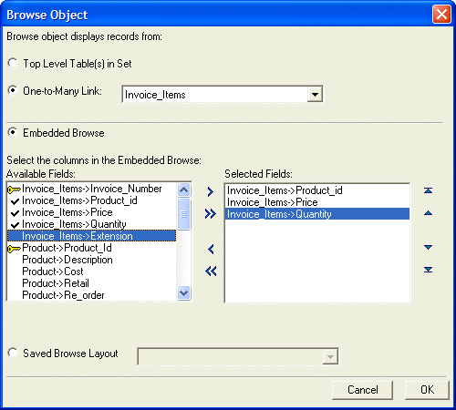
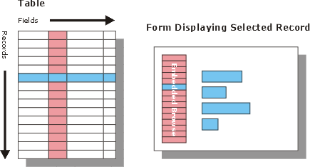
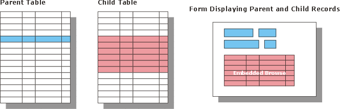

Placing an Embedded Browse
You can place an embedded browse on a form to display multiple records from a child table in a set, or on a form designed for a single table. By clicking on a row of the browse, the record you click becomes the current one.
To place an embedded browse on a form:
Select the Browse tool on the Tool Palette.
Click and drag the cursor over the area on which you want to place the browse. When you release the mouse button, the Browse Object dialog box appears. This version of the dialog box is for a set. The table version does not have to two top radio buttons.

If the form is based on a set, select one of the two radio buttons at the top of the form. The options are:
Top Level Table(s) in Set - the fields of the parent table and any child tables linked one-to-one will be listed
One-to-Many Link - the fields of the all child tables linked one-to-many will be listed
If you selected "One-to-Many Link", select a table from the adjacent list.
The Browse Object dialog box let's you choose either an Embedded Browse or a Saved Browse Layout.
If you selected Embedded Browse,
Select each field that you want to display on the browse in the Available Fields list and click
 to add it to the Selected
Fields list. Click
to add it to the Selected
Fields list. Click  to add all fields to the browse.
to add all fields to the browse.Select each field that you want to remove from the browse in the Selected Fields list and click
 . Click
. Click  to
remove all fields from the browse.
to
remove all fields from the browse.Use the
 ,
,  ,
,  , and buttons
to reorganize the fields within a browse.
, and buttons
to reorganize the fields within a browse.If you selected Saved Browse Layout , make a selection from the adjacent list available browses. When you choose this option, the entire saved browse layout is displayed on the form.
After making a selection, the browse appears and the Browse Editor is activated. To exit the Browse Editor, click outside of the browse. To enter the Browse Editor again, double click on the browse.
 Note : For instructions
on editing a browse, refer to Browse Overview.
Note : For instructions
on editing a browse, refer to Browse Overview.
Using an Embedded Browse with a Single Table
Suppose you have a table of products. Each record represents one product. You could use a browse to display products on the form. By clicking a product in the browse, the record becomes active and the form displays more detailed information about the record you selected.

Using an Embedded Browse with a Set
Suppose you have a form which displays invoice information from a set. On the top of the form you have placed fields describing the invoice, such as the invoice number and the date. Next to them you place fields containing the customer number and the customer's billing information. Below you place a browse containing the invoice line-items.
As you move from record-to-record (invoice-to-invoice), the line items change so that you always see the line-items for the current invoice.

See Also
Using the Toolbox, Placing a Field on a Form, Embedded Browse Properties